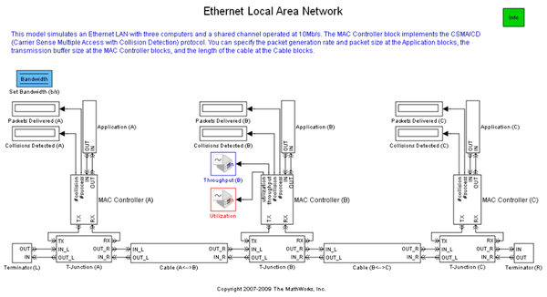
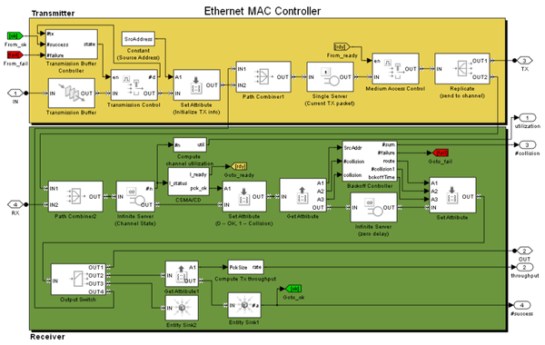

Ethernet Local Area Network
Contents
Overview
This model simulates an Ethernet LAN with three computers and a shared channel operated at 10 Mbps. The MAC Controller block implements the CSMA/CD (Carrier Sense Multiple Access with Collision Detection) protocol.
Structure of the Model
The top level of the model includes three computers, each consisting of the following:
- An Application block that models the consumer of data.
- A MAC (medium access control) controller that governs the computer's use of the shared channel.
- A T-junction that connects the computer to the network.
You can specify the packet generation rate and packet size range at the Application blocks, the transmission buffer size at the MAC Controller blocks, and the length of the cable at the Cable blocks. The terminator, T-junction, and cable blocks at the bottom of the model represent physical components of the network.
Implementing the CSMA/CD Protocol
Standard Ethernet networks use a CSMA/CD protocol to manage use of the shared channel. Each computer's MAC controller physically monitors the traffic on the channel and initiates a transmission only when the controller detects no other traffic on the channel. If transmissions from two computers compete for use of the channel, then a collision occurs. Packets that collide with other packets can make a fixed number of additional attempts after a waiting period elapses, using the binary exponential backoff algorithm.
In this model, the CSMA/CD protocol is implemented in the MAC Controller subsystems.
Results and Displays
This model includes various visualization that capture the performance of this Ethernet bus:
- Display blocks that show the number of packets that each computer observes as successful or unsuccessful communications. Propagation delay modeled in the Cable blocks can cause different computers to observe slightly different results.
- The Throughput plot shows the ransmission throughput at one of the computers.
- The Channel Utilization plot shows the proportion of time that the channel is in use.
References
[1] Tanenbaum, Andrew S., Computer Networks, Fourth Ed., Upper Saddle River, N.J., Prentice Hall PTR, 2002.